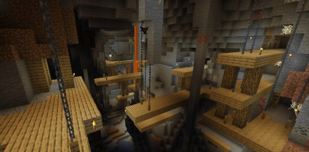
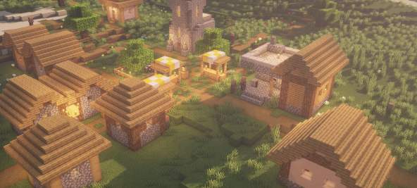
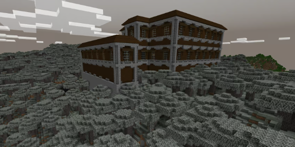
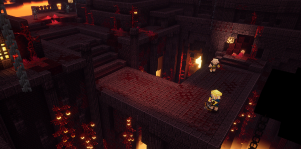
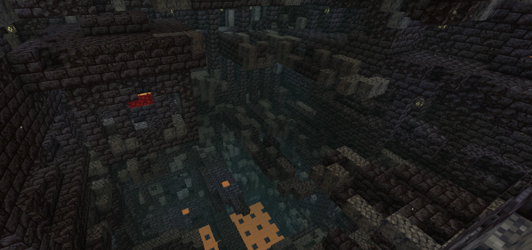
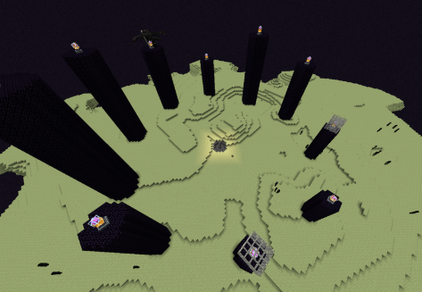
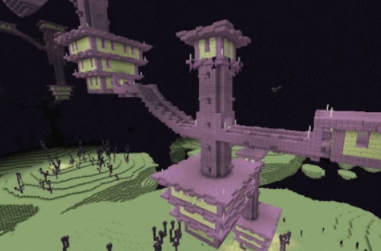
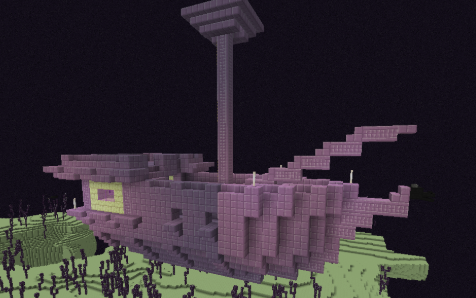

Les structures sont des lieux générés par le jeu qui peuvent contenir des ressources, des ennemis ou d'autres éléments intéressants.
Il existe plusieurs types de structures dans Minecraft, chacune ayant ses propres caractéristiques et ressources.
Les structures peuvent être trouvées dans l'Overworld, le Nether et l'End.
Dans cette section, nous allons explorer les différents types de structures que l'on peut rencontrer dans le jeu.
Les structures sont uniques en fonction du monde



le Nether ne contient que deux structures déjà généré:


L'End, monde du vide, contient trois batiment à son actif, tous plus dangereux les uns que les autres:



Ces structures sont essentielles pour progresser dans le jeu et découvrir de nouveaux défis.
Il est important d'explorer ces structures pour trouver des ressources, combattre des ennemis et découvrir de nouveaux secrets.
En explorant ces structures, vous pourrez également trouver des trésors cachés et des objets rares qui vous aideront dans votre aventure.
En résumé, les structures sont des éléments clés de l'expérience de jeu dans Minecraft. Elles ajoutent de la profondeur et de la variété au monde, offrant aux joueurs de nombreuses opportunités d'exploration et de découverte.